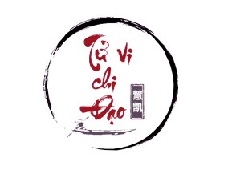
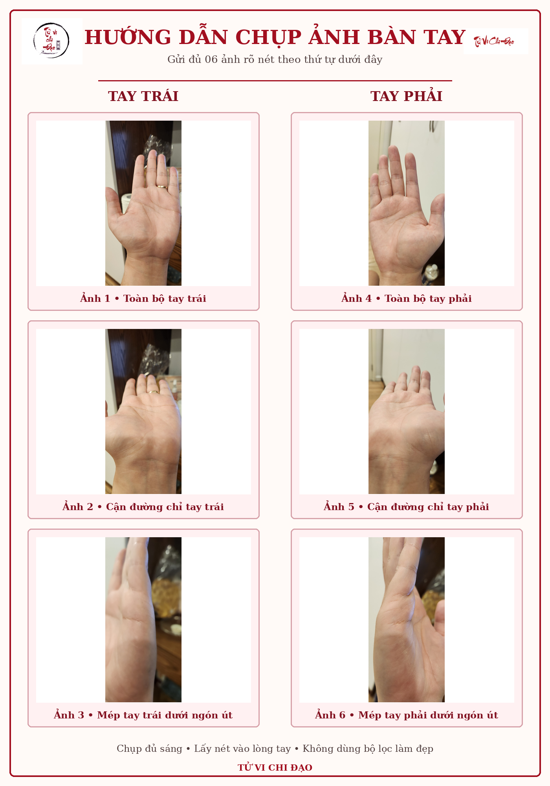

Đối chiếu hai tay
Tay không thuận phản ánh nền tảng; tay thuận cho thấy cách bạn đang phát triển và vận dụng.
TỬ VI CHI ĐẠO · THỦ TƯỚNG CỔ HỌC
Đối chiếu cả hai bàn tay để nhận diện nền tảng bẩm sinh, quá trình trưởng thành và những tiềm năng bạn có thể chủ động phát huy.


01
MỘT GÓC NHÌN ĐỂ THẤU HIỂU
Xem chỉ tay – Thủ tướng cổ học Tử Vi Chi Đạo quan sát hình dáng bàn tay, các đường chỉ, gò và dấu hiệu đặc biệt để nhận diện thiên hướng tính cách, năng lực, công danh, tài lộc, tình cảm và những giai đoạn phát triển trong cuộc đời.
BẠN NHẬN ĐƯỢC GÌ?
Tay không thuận phản ánh nền tảng; tay thuận cho thấy cách bạn đang phát triển và vận dụng.
Khí chất, tư duy, cảm xúc, sức bền ý chí và cách bạn phản ứng trước lựa chọn.
Thiên hướng nghề nghiệp, cách tạo giá trị, nhịp phát triển và điểm cần lưu ý khi ra quyết định.
Cách gắn kết, nhu cầu tình cảm và những khuynh hướng nên nhận biết để vun bồi quan hệ.
Nhận diện những chặng chuyển biến đáng chú ý để chủ động chuẩn bị và lựa chọn.
Kết luận cô đọng, nêu thế mạnh nên phát huy và thói quen nên điều chỉnh.
QUY TRÌNH 4 BƯỚC
Cung cấp họ tên, năm sinh, nghề nghiệp, tay thuận và thông tin liên hệ ngay cuối trang.
TPBank · 88817111989
Nguyễn Đức Hải
Gửi ảnh rõ nét qua Zalo Mr Hải: 0906 188 978.
Chờ 1–2 ngày để nhận kết quả luận giải cá nhân hóa.
ẢNH RÕ · LUẬN SÂU
Ba ảnh tay trái và ba ảnh tay phải: toàn bộ lòng bàn tay, góc nghiêng đường chính và cạnh bàn tay. Ánh sáng đều, máy lấy nét vào đường chỉ, không dùng bộ lọc làm mịn.
CHI PHÍ MINH BẠCH
Ưu đãi áp dụng cho 15 khách đăng ký đầu tiên theo thông tin trên Google Form.
Giá dịch vụ
GÓC NHÌN CHUYÊN SÂU
Với nhu cầu tìm hiểu riêng về đất cát, mồ mả, vấn đề tâm linh, duyên âm hoặc hạn lớn, Tử Vi Chi Đạo có thể hỗ trợ kết nối người có năng lực xem sâu hơn. Nội dung này chỉ thực hiện khi khách chủ động yêu cầu.
HỎI NHANH – ĐÁP GỌN
Thông tin cơ bản và 6 ảnh rõ nét của hai bàn tay: 3 ảnh tay trái, 3 ảnh tay phải theo mẫu hướng dẫn.
Bạn nhận bản luận PDF cá nhân hóa sau khoảng 1–2 ngày kể từ khi hoàn tất thông tin, thanh toán và gửi đủ ảnh.
Mức ưu đãi giảm 50% từ 199.000đ còn 99.000đ dành cho 15 khách đăng ký đầu tiên.
Không. Đây là góc nhìn tham khảo từ tri thức cổ học, hướng đến sự thấu hiểu bản thân và chủ động hoàn thiện cuộc sống; không xem vận mệnh là điều bất biến.
ĐĂNG KÝ TRỰC TIẾP
Sau khi gửi form, chuyển khoản phí và gửi ảnh bàn tay qua Zalo Mr Hải: 0906 188 978.
Nếu biểu mẫu không hiển thị, mở Google Form trong cửa sổ mới.